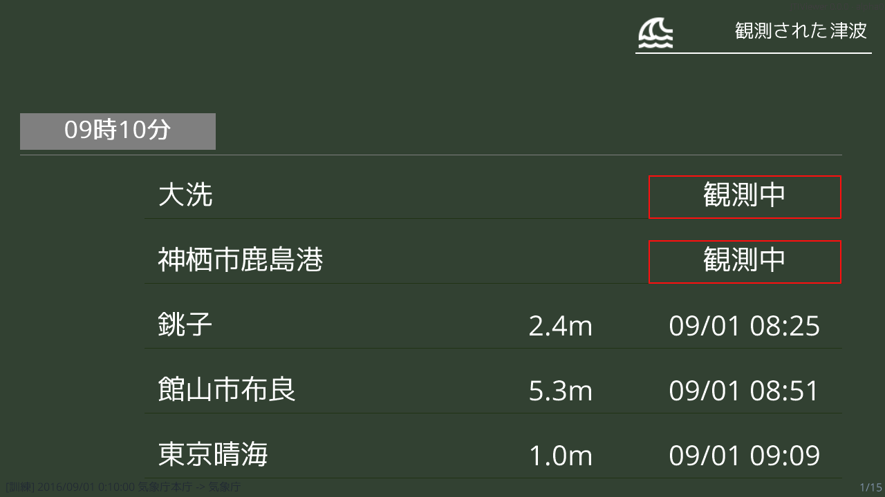

推奨実行環境
| OS | RAM | CPU | .Net |
|---|---|---|---|
| Windows7+ x86 / x64 | 4GB+ | 2コア+ | .Net Framework 4.7.2 |
- 最低限、.Net Framework 4.7.2が実行できる環境である必要があります。
- .Netについては実行に必須です
- .Net Framework 4.7.2のダウンロード
詳細
 |
 |
|
津波情報をリストで表示する 気象庁など様々な場所から取得した情報(VTSE41, VTSE51, VTSE52)を表示します。 |
|
 |
|
|
津波情報 WITH 棒読みちゃん 棒読みちゃんとの連携設定で気象庁など様々な場所から取得した情報(VTSE41, VTSE51, VTSE52)を棒読みちゃんに読み上げてもらうことができます。 |
津波情報を地図で表示する (VTSE41に限り)津波情報を地図で表示します。 また、発表区域の線は各自で作成、設定することが可能です。 |
 |
 |
|
表示させる情報は様々な場所から アプリで表示させる情報は気象庁XMLに限らず、オンライン上のXML電文、ローカルデータに対応しています。 |
テロップ表示 (設定により)津波情報発表・更新時に画像のようなテロップを表示することができます。 |
|
様々な言語に対応 表示させる内容を言語パックとしてまとめているため、PCにフォントが入っていれば表示することができます。 |
|
仕様
表示内容
表示画面に表示される内容(地図を除く)について
タグ表示について
色・文字列は次の配色を使用しています
| 区分 | 色 | 文字列 |
|---|---|---|
| 大津波警報 | 0x9429FF | 大津波警報 |
| 津波警報 | 0xFF0F0F | 津波警報 |
| 津波注意報 | 0xD06800 | 津波注意報 |
| 津波予報 | 0x008064 | 津波予報 |
| 津波警報解除 | 0xAD6161 | 津波警報解除 |
| 津波注意報解除 | 0x8A7600 | 注意報解除 |
この配色は地図の対象地域線のデフォルト1、デフォルト2でも使用しています。
観測された津波については、タグ表示部分に電文の発表時刻を表示しています。
高さ表示部分の囲みについて
VTSE41については
VTSE5Xについては以下の表をご覧ください。
| 表示内容 | 状態 |
|---|---|
| 高さ部分を0x9429FFで囲む | 想定されていた高さを超えている場合 |
| 時刻部分を0xFF007Fで囲む & 上昇中アイコンを地点名の前に表示する | 津波観測値が上昇している場合 |
| 時刻部分を0xFF0F0Fで囲む | 津波を観測している(観測値処理中)場合 |